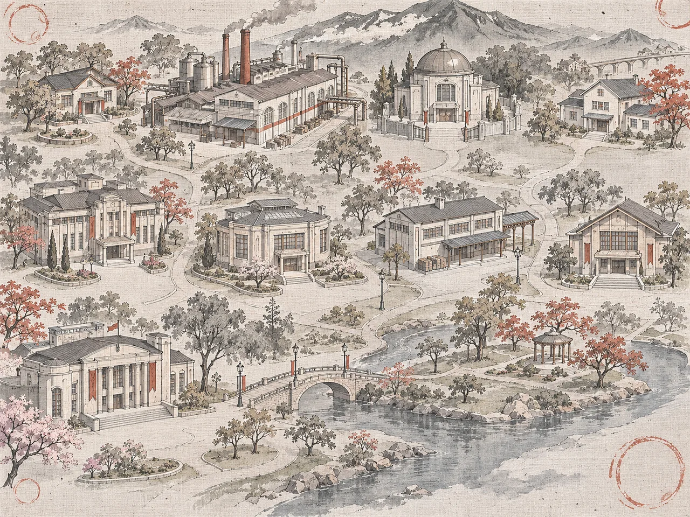
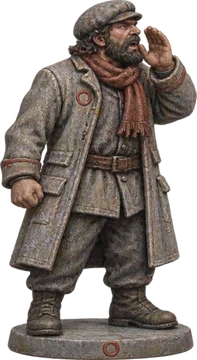

Белый пепел на манжетах
Карты и фигурки ведущего
Игровой комплект
3 игрока · 4 игрока · 5 игроков · 6 игроков · 7 игроков · 8 игроков
Карта кампании

Поля боя


Герои


Персонажи ведущего


Противники
 Заводской сторож, взрослый 35 лет 4Заводской сторож, взрослый 35 лет 5Заводской сторож, взрослый 35 лет 2Заводской сторож, взрослый 35 лет 1Заводской сторож, взрослый 35 лет 6Заводской сторож, взрослый 35 лет 3
Заводской сторож, взрослый 35 лет 4Заводской сторож, взрослый 35 лет 5Заводской сторож, взрослый 35 лет 2Заводской сторож, взрослый 35 лет 1Заводской сторож, взрослый 35 лет 6Заводской сторож, взрослый 35 лет 3 Заводской сопровождающий, взрослый 39 лет 5Заводской сопровождающий, взрослый 39 лет 3Заводской сопровождающий, взрослый 39 лет 1Заводской сопровождающий, взрослый 39 лет 2Заводской сопровождающий, взрослый 39 лет 4Заводской сопровождающий, взрослый 39 лет 6
Заводской сопровождающий, взрослый 39 лет 5Заводской сопровождающий, взрослый 39 лет 3Заводской сопровождающий, взрослый 39 лет 1Заводской сопровождающий, взрослый 39 лет 2Заводской сопровождающий, взрослый 39 лет 4Заводской сопровождающий, взрослый 39 лет 6

Наёмный сопровождающий, взрослый 42 лет 5Наёмный сопровождающий, взрослый 42 лет 6Наёмный сопровождающий, взрослый 42 лет 3Наёмный сопровождающий, взрослый 42 лет 2Наёмный сопровождающий, взрослый 42 лет 4Наёмный сопровождающий, взрослый 42 лет 1